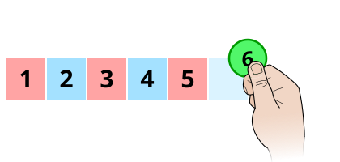

Doorway
Number Table

Number Table
Complete the table
Number Table Scoreboard
| Table | Errors | Score | Percent |
|---|
* Two points are awarded for each correctly placed counter. One point is taken away for each incorrect move. You also lose one point for each "check" performed while all the counters are not placed correctly.
Tip: choose 'Save as PDF' in the print dialog to keep a digital copy.